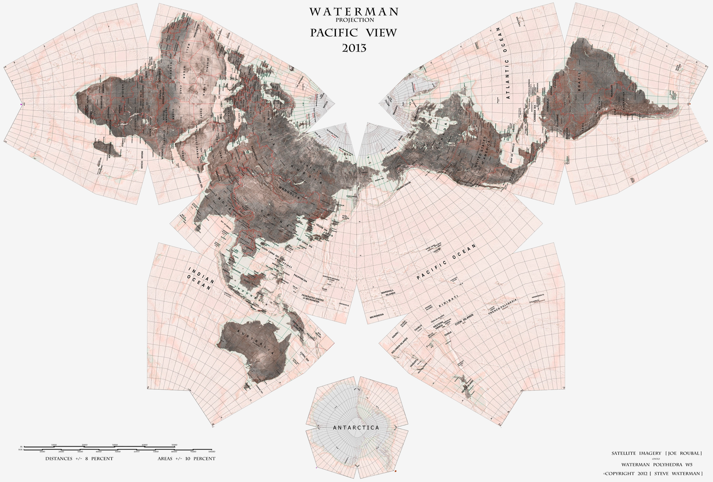

“As True as It Is Useless”. Tales from Misunderstood Models of Understanding
A few months ago I was discussing the then recent game release Starfield on an online forum. I had openly questioned why the faces of the in-game characters looked so much more disturbing than those in previous Bethesda Game Studios release when another commenter excitedly informed me that it was just the result of the uncanny valley effect. And I told them that this answer was as true as it is useless.
Truth be told this was not the first time I’ve come to use this rhetorical epithet. In studying the social sciences the ability to point out when an interlocutor has responded to your question with a mere statement of a related fact masquerading as an answer proves to be remarkably valuable. And so I would like to take my—admittedly pithy—rhetoric and expound upon why I find these responses to be insufficient responses to such lines of inquiry.
And so, why does a reference to the uncanny valley not answer my question about Starfield’s disturbing faces? We know that as a non-human object such as an robot or a character model approaches a realistic human likeness there is a range of realism, referred to as the uncanny valley at which positive and empathetic sentiments turn to feelings of revulsion. And so the implication of my online correspondent is very clear in that the in-game character models fall within this range, and therefore induce this response. But the issue with this reasoning, in my view, is that it is only sufficient in so far as it characterises the category of phenomena which this example falls into, and doesn’t investigate the specific example itself.
I feel it is therefore worthwhile to to analyse more closely the constituents components of the Starfield models in order to consider why they might fall into this range of realism.
And one factor which I feel heavily contributes to the disturbing nature of these facial models is the manner in which they are presented to the player. Quite notably during the in-game dialogue scenes the camera shot is framed as in extreme close-up right on the characters face. In doing so the designers have physically placed the player much more intimately close with the characters. And in doing so they hold the player hostage beneath the character’s dead-eyed stare; forced to gaze upon the emotionless abyss of their too-smooth skin and unyielding hair.
Due to the concept’s emergence from the study of robotics discussions that centre around the uncanny valley tend to sideline presentational aspects such as this. It predisposes us to thinking about the objects we’re discussing as innately disturbing and not necessarily as being framed to us in a discomforting way. And this is the fundamental error my correspondent made by trying to dismissively label away the problem. It’s not so much that their reasoning was unsound or based on false premises, but that it was incompletely correct, and therefore limiting as to the scope of our inquiry.
This is particularly disappointing when discussing a developing discipline such as game design. From a practical perspective these incomplete discussions hinder our ability as analysts to give actually insightful feedback about how to improve upon these issues in future releases. One can easily imagine a character designer reeling at the non-specific feedback to make the characters “less uncanny valley-ey”. But at a far more conceptual level I worry that blind appeals to these neatly constructed categorical labels prevent us from achieving true understanding of the issues we’re discussing.

Above sits the Waterman map projection; a world map which its marketing copy boldly states “will one day be in every classroom” 2 as a replacement for the much more widely used mercator and robinson map projections.
The reasoning given for this statement is that the waterman butterfly is derived from a process which least distorts aspects such as continent’s sizes, shapes and relative positions during the conversion from globe to map. This is in reference to a mathematical problem that there is no known way to perfectly maintain the characteristics of a sphere’s surface during it’s transformation into a flat plane.
Like many people I was first made aware of the debate around map projections by an episode of The West Wing in which the White House Press Secretary, C.J. Cregg, attends a meeting with members from the fictional Organisation of Cartographers for Social Equality (OCSE). During this meeting the cartographers she speaks with clearly outline the issues with continuing to use the mercator projection as the basis for map designs. Namely, the ways in which it distorts the relative sizes of landmasses by enlarging areas near the poles and thus presents Greenland for example as the same size as Africa despite only being 1/14th its size. For these reasons they recommend switching out the outdated mercator maps in favour of the Gall–Peters projection.
As the OCSE’s main speaker, Dr. John Fallow, concludes:
“When third world countries are misrepresented, they’re likely to be valued less. When mercator maps exaggerate the importance of western civilisation; when the top of the map is given to the northern hemisphere, and the bottom is given to the southern then people will tend to adopt top and bottom attitudes.” 3
It’s a fantastically effective piece of rhetoric from script writers Paul Redford and Aaron Sorkin which, unfortunately, is in service of an outcome that runs counter to the very issues it’s trying to resolve.
What the OCSE, and the marketers of the Waterman Projection fail to answer is why geography students should be taught using a singular map projection in the first place. If the intent of these proposed educational changes are to circumvent these political and social biases then would it not be far more effective to instead use Geography to teach students about map projections and the ways in which they distort the world?
The truth is that even distorted models have some value in their ability to demonstrate not the world as it actually is but our relationship with that world. Despite its topological beauty it is none the less difficult to conceptualise how, exactly, one travels from Africa to Australia across the Waterman Butterfly’s fragmented surface. And the Gall–Peters projection, despite impressive claims about its correct relative sizes of landmasses, achieves this ideal at the cost of grossly distorting their shapes.
Maps have a fantastic ability to sum up the world into a single clear image; placing it on a single simultaneously observable plane. This is a feature that not even the most accurate model (a globe) can lay claim to. But any model—no matter how precise—will have its own set of reductions, exaggerations, and omissions. It is only by placing these disparate models in dialogue with one another, with clear attention to each's individual quirks that we are truly able to deepen our understanding of the world and our place in it. To do otherwise is to simply trade one set of flawed biases for another. 4
This issue of not properly recognising either the value and/or problems associated with our models of understanding rears itself quite frequently in the manner in which music theory is taught, presented, and discussed. Consider the following theoretic description of Mozart's 19th String Quartet:
The first movement’s andante introduction begins with an ostinato 8th note pulse played by the cello beginning on C. This is joined successively by an Ab from the viola, followed by an Eb from the second violin and a high A from the first as the viola descends to a G. This is done to avoid the semitone clash between the first violin and viola in favour of a lesser harmonic dissonance; best interpreted as a Cmin6 chord. The upper three voices continue in counterpoint for the following two measures as the bass descends chromatically before the sequence repeats a tone lower.
The above is certainly a detailed, technical, and accurate description. And yet—quite notably—not a single reader of this article, presently knows what this introduction sounds like. And this problem runs deeper than the audience simply not having the requisite knowledge to understand what is being said. Even the most ardent music theory scholars will only be able to transmute an analysis like the one above into at best a way in which to assign the introduction into some sort of categorical reduction; thinking of it as perhaps “one of those weird dissonant openings” or some other category.
I hold this to be a fundamental restriction of musico-theoretic analysis. Put simply, that it can tell you absolutely everything about a piece of music except how it sounds; what the experience of listening to it is like.
And yet, this limitation of the discipline is so rarely acknowledged in the way that it’s taught and discussed. A brief perusal of forums such as the music theory subreddit provides ample examples of people treating these theoretical tenets as absolute rules about the nature of music, how it functions, and the way that it sounds.
Now, in most circumstances this is most likely just the result of implied assumptions which arise from our casual uses of language. A commentator might ask “what’s this song’s scale?” rather than the more formal “what scales can we interpret this song as using?” more out of convenience than a desire to make a statement about some true verifiable nature of the piece discussed.
But in some circumstances the assumptions made by music theory about the important and valuable aspects of music are weaponised; often for the intent of disparaging a piece or style which doesn’t meet the author’s personal standards and opinions. This practice is at least as old as institutional academic music research and has historically been used by academics as a cultural tool for classist assaults on ther lower-class, and their purportedly ‘lesser’ musical sensibilities.
Take the following indictment of popular music from Theodore Adorno:
“The whole structure of popular music is standardized, even where the attempt is made to circumvent standardization. Standardization extends from the most general features to the most specific ones. Best known is the rule that the chorus consists of thirty two bars and that the range is limited to one octave and one note.” 5
This ‘standardised’ conception of popular music is positioned in contrast to the supposedly ‘serious’ classical music arising from the European Common Practice tradition. But—in service of his rhetoric—places extremely strict boundaries on what elements of music can possibly be standardized.
Adorno’s argument is centered on a conceptualisation of music in which melody, harmony, rhythm, and form are the only elements of music through which one piece differentiates itself from another. And it falls apart as soon as any other musical elements are taken into consideration.
What are we to make of popular music’s vast array of experiments with regard to the timbre of sound? Even at the time Adorno was writing popular music singers—as one example—displayed a far greater variety of vocal styles than those present amongst singers from the standardised operatic tradition. And what of the varied performance practices present in popular music communities, with their thriving audiences and overflowing mosh pits? Surely these present a greater variety of musical experiences than the strict rules familiar to those confined in the concert hall, scared to cough and not clapping between movements.
But these vast and highly affective differences between the experiences of popular music pieces are ignored by Adorno and his proponents. At best best they may be regarded as mere ornaments atop what they consider the actually important structural components of a musical work.
This is, in my view, the true danger of how these types of theory laden conceptualisations are so often treated as objective observations. They become so entirely entwined with a single way through which the world can be labelled, categorized and understood that they become incompatible with any other interpretation. They become as true within their model as they are useless outside of it.
It should be made clear that all of this is not to say that we should erase these problematic models entirely. The uncanny valley is a fascinating framework for ongoing research, map projections are excellent representations of the Earth as it appears to be, and music analysis can be an incredibly useful diagnostic tool for composers. Even jargon, when used within the confines of a particular community assists greatly in its ability to concisely refer to complex ideas.
But there is a fundamental problem with how easily the existence of a model becomes a convenient excuse to avoid actually investigating the object which it models. The path toward true understanding of a concept requires much more rigour and thorough investigation than merely enough to label it and we do ourselves a disservice by so often pretending otherwise. Because you don’t gain control over something by merely giving it a name.
Aragorn Keuken
January 31st, 2024

- One prescient example of this behaviour comes from an early draft of this very article wherein its author stated that the behaviours above betrayed an “indexical ontology of epistemic knowledge and understanding.” Such adjectival vomit may make one feel accomplished during a writing session or a seminar but prove to be very poor at actually demonstrating the ideas to which they supposedly refer. ⤴
- Waterman Polyhedron. n.d. “Waterman Projection”. Butterfly Project. Accessed January 29, 2024. ⤴
- The West Wing, Season 2, Episode 16, “Somebody’s Going to Emergency, Somebody’s Going to Jail,” directed by Jessica Yu, written by Paul Redford and Aaron Sorkin, aired February 28th, 2001, on NBC. ⤴
- Though mercator maps can still burn in a dumpster-fire for all I care. ⤴
- Theodore Adorno. “On Popular Music,” in Essays on Music, trans. Susan H. Gillespie (California: University of California Press, 2002), 437. ⤴